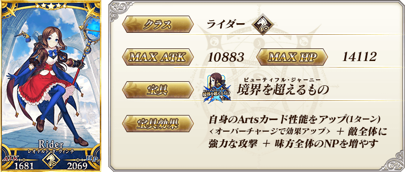
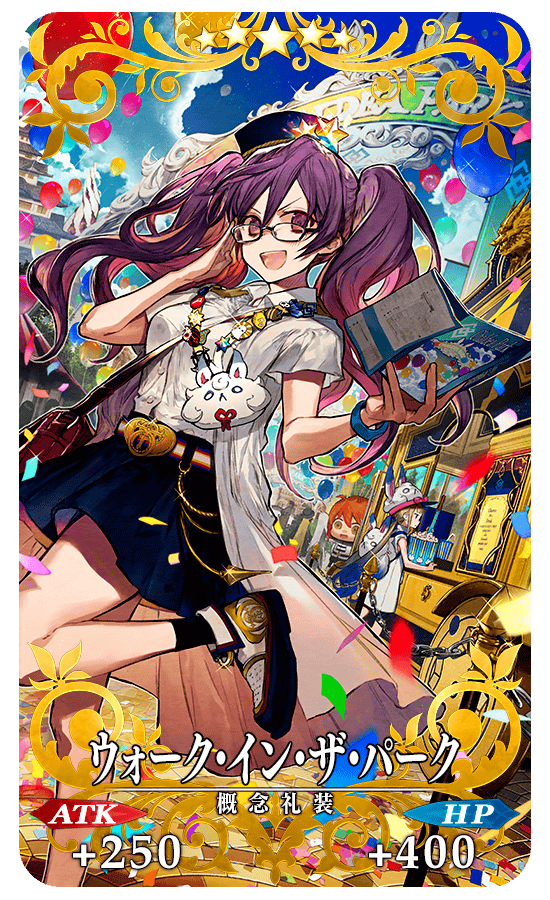
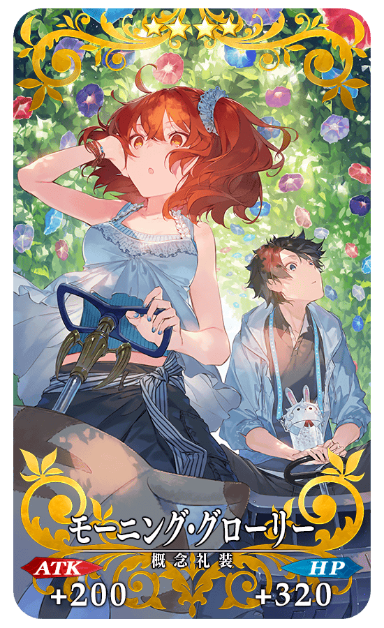
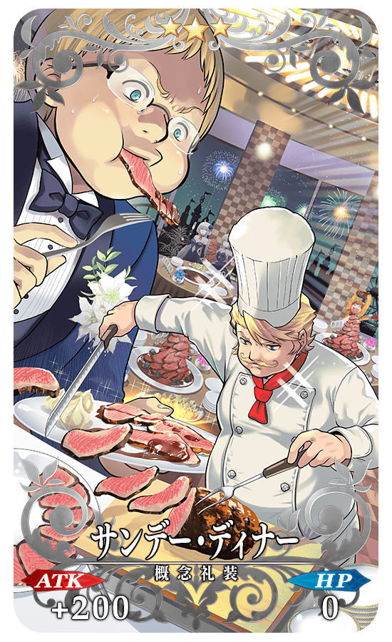
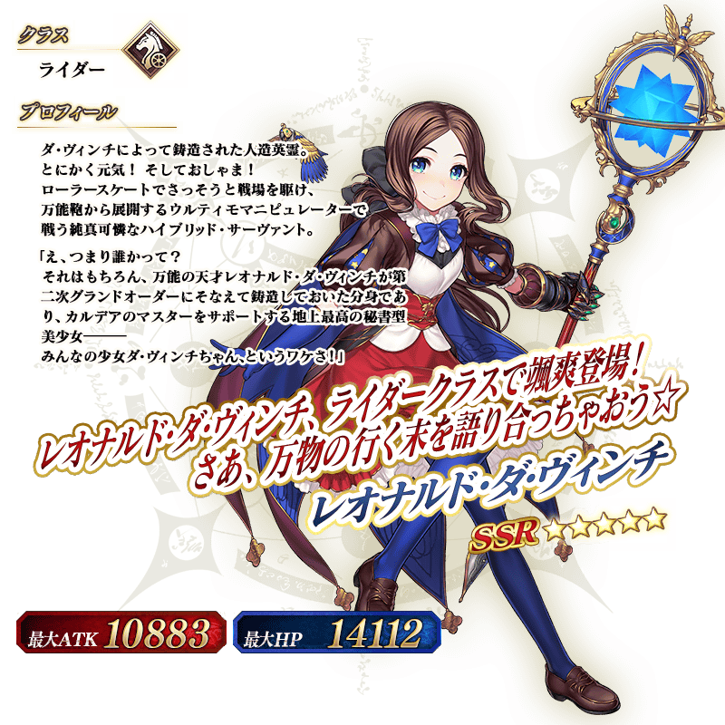

◆『「Lostbelt No.6 妖精圓卓領域 阿瓦隆・勒菲 星辰誕生之刻」開幕前夕Pick Up召喚』期間◆
期間:2021年6月2日(三) 17:00～6月16日(三) 11:59
舉辦期間限定『「Lostbelt No.6 妖精圓卓領域 阿瓦隆・勒菲 星辰誕生之刻」開幕前夕Pick Up召喚』！
※就算未滿足主線關卡開放條件的狀態也能進行本召喚。
從第2部 第6章「Lostbelt No.6 妖精圓卓領域 阿瓦隆・勒菲 星辰誕生之刻」關聯從者之中1位從者與2019年的「FGO Fes. 2019 ～4th Anniversary～ Lostbelt＆亞種特異點Pick Up召喚(每日交替)」中登場的3種期間限定概念禮裝Pick Up！
▼期間限定從者
・★5(SSR)李奧納多・達文西(Rider)
▼期間限定概念禮裝
・★5(SSR)ウォーク・イン・ザ・パーク
・★4(SR)モーニング・グローリー
・★3(R)サンデー・ディナー
Pick Up期間中，Pick Up對象從者與概念禮裝的出現機率提升！
詳情請在聖晶石召喚畫面左下的召喚詳細確認。
11次召喚中確定1張★4(SR)以上和確定1位★3(R)以上的從者！ ※確定★4(SR)以上包含從者和概念禮裝。
◆有關從者的注意◆
※下述的從者在Pick Up期間結束後不會追加到故事召喚。
・★5(SSR)李奧納多・達文西(Rider)
◆有關概念禮裝的注意◆
※下述的概念禮裝，Pick Up期間中也能靠友情點數召喚獲得。
・★3(R)サンデー・ディナー
※在自動變還設定登錄★3(R)概念禮裝的情況，下述的概念禮裝會變成自動變還的對象。
・★3(R)サンデー・ディナー

|  |
★★★★★SSR |
|  |
★★★★SR |
|  |
★★★R |


介紹在本召喚Pick Up的「★5(SSR)李奧納多・達文西(Rider)」寶具演出！
其他還有，
・「Lostbelt No.6 妖精圓卓領域 阿瓦隆・勒菲 星辰誕生之刻」開幕前夕宣傳活動
・主線關卡通過聲援宣傳活動
以期間限定同時舉辦！
關於詳情，請自下述橫幅確認。
■「Lostbelt No.6 妖精圓卓領域 阿瓦隆・勒菲 星辰誕生之刻」開幕前夕宣傳活動詳細情報

■主線關卡通過聲援宣傳活動詳細情報